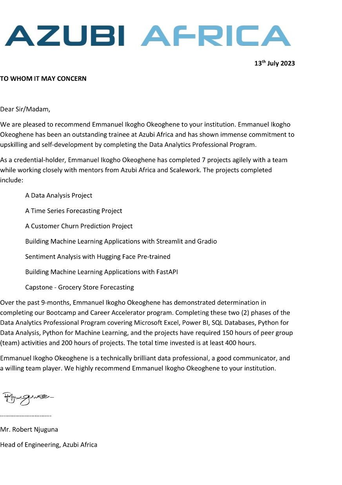
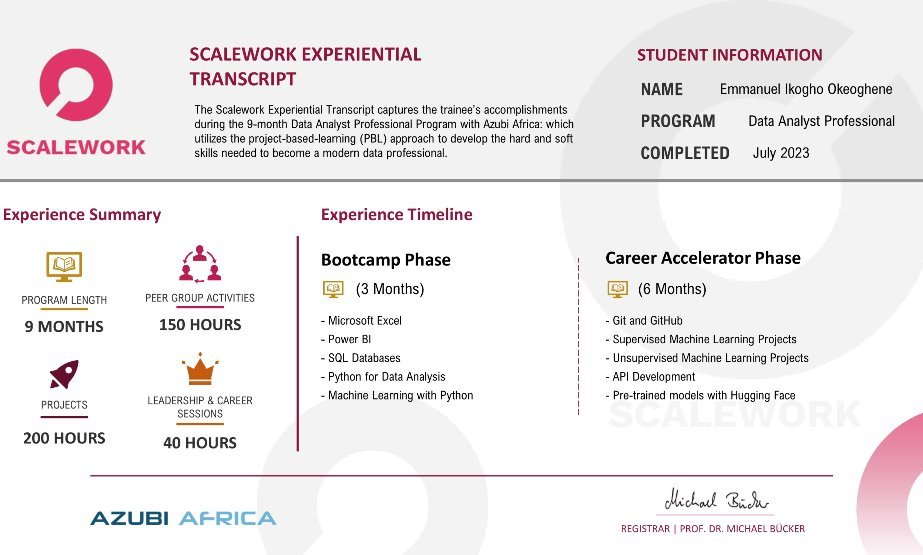

Azubi Africa📈🧪 Data Analytics Program
Welcome to the story of my experience in the Data Analytics Program. Let me take you through the ups and downs, the challenges, and the achievements of my journey. Starting from my childhood on a farm, where we cared for thousands of birds and had a fishery with catfish and trained snails, farming and animals became a significant part of my life in Nigeria. In 2020, during the pandemic, I discovered data science and started learning about it, but self-learning became overwhelming. Two years later, my aunt shared a link to Azubi Africa, a program with actual data analysts as instructors. Despite challenges like unreliable power supply, I remained efficient and got a solar panel, fueling my passion for data analysis. Inspired by my parent's financial struggles as University lecturers, I chose the well-compensated and balanced field of technology and data analysis, ready to make my mark. One of the major obstacles I faced during the program was the unreliable power supply in Nigeria. There were days when I couldn't work due to the lack of electricity. However, this adversity taught me the value of efficiency. I learned to complete assignments quickly and make the most of the limited time available. To tackle this issue, I invested in a solar panel and power station, which significantly improved my productivity and passion for data analysis. Presenting my work and overcoming various challenges in the program proved to be both tough and rewarding. Throughout this journey, my aunt, who was not directly involved in data analytics but had experience in the tech industry, played a crucial role. She shared stories of colleagues who left their low paying jobs for more fulfilling and lucrative positions as data analysts. Witnessing the dedication of my family members as lecturers, despite their financial struggles, solidified my resolve to pursue a career where hard work would be well-compensated. Technology and data analysis emerged as the fields that appealed to me the most. They offered not only good pay but also a better work-life balance. Seeing my aunt's success in the tech world, where she earned significantly more and had a healthier work-life balance than my family members in lecturing roles, reinforced my decision. I wanted a career that rewarded me while allowing me time to take online courses and schools to upskill myself. Looking ahead, my plan is to continue learning and preparing myself for future opportunities. Data analytics is a rapidly evolving field, and I aim to stay ahead by upskilling and expanding my knowledge. My dream company is one that values innovation, collaboration, and social responsibility, allowing me to make a meaningful impact in the organization. Additionally, I aspire to work in a company that embraces emerging technologies, fosters a diverse and inclusive environment, and encourages professional growth and development.  The Journey of Justin Jabo
Introduction: The Foundation
Discovering Data Analytics
Joining Azubi Africa: A Turning Point
Overcoming Challenges: Power Outages and Efficiency
The Rewarding Journey: Presentations and Inspiration
The Appeal of Technology: A Brighter Future
Future Plans: Continual Learning and Growth
Dream Company and Role
Recommendation Letter
Certificate
Fun Fact: I'm a gym fitness coach, and exercise enthusiast😂